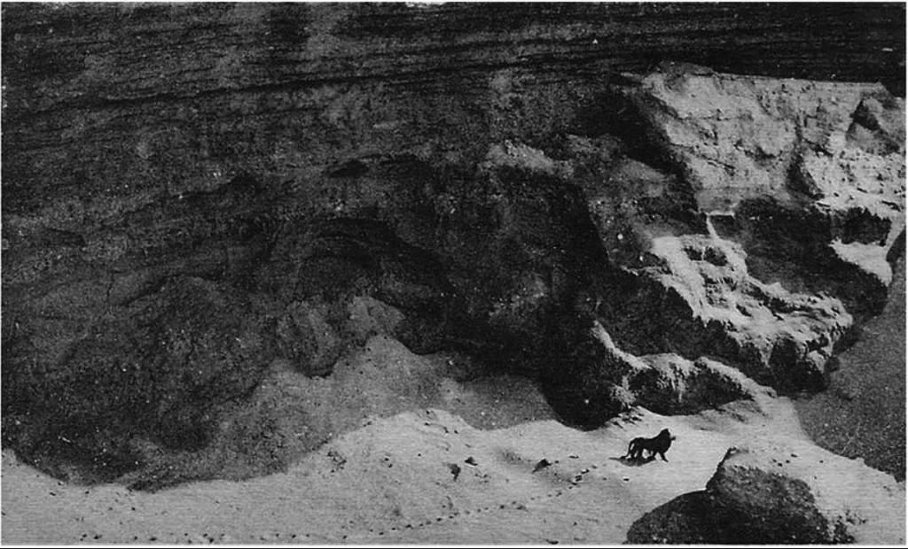

Gone Forever :(

Climate Change and human activity have unfortunately led to the loss of many unique species.
When a species goes extinct, it affects the whole ecosystem and the food chain it was apart of.
Notable Extinctions
- Barbary Lion: Once native to the North African mountains and deserts, driven to extinction due to haabitat destruction and over hunting in the early 20th century. The image above is its last recorded sighting
- The Pinta Island Tortoise: Became extinct in 2012 when the last known of its species, Lonesome George, passed away
- The Golden Toad: Last seen in 1989, it was one of the first species whose extinction was due to global warming
- The Bramble Cay Melomys: A small rodent that was the first mammal to go extinct due to humans affect on the climate and rising sea levels.